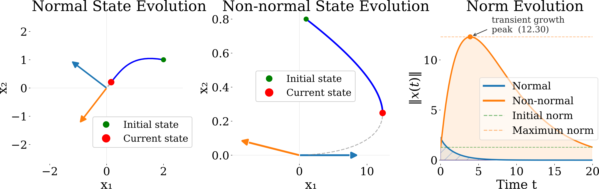
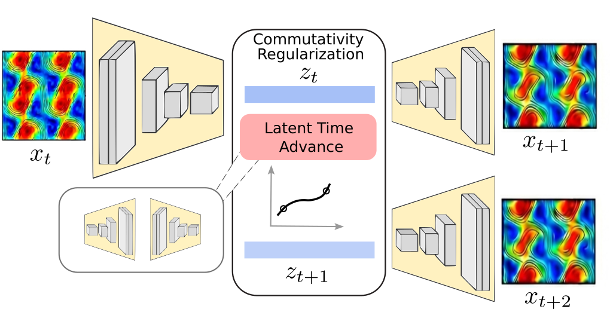
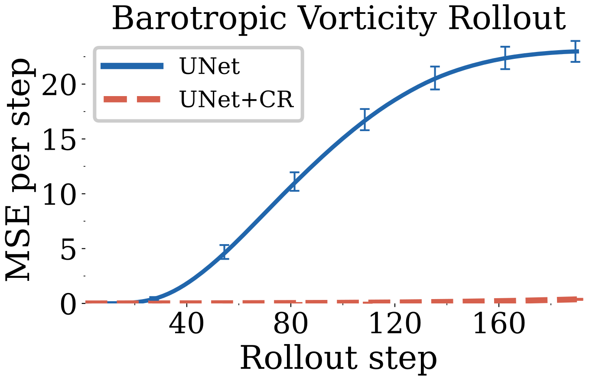
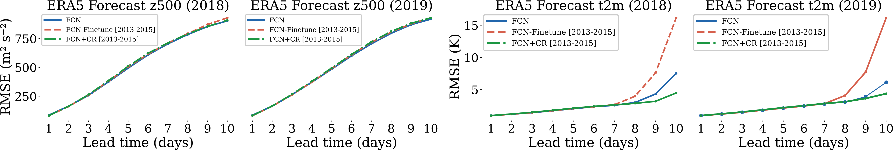

Controlling Transient Amplification Improves Long-horizon Rollouts
A structural cause of rollout drift in neural simulators — and a zero-inference-cost regularizer that controls it
Autoregressive neural simulators match classical solvers on short-horizon prediction but degrade rapidly over long rollouts. This work identifies transient amplification of perturbations along rollout trajectories as a structural driver of that error: when the Jacobians along an autoregressive trajectory are non-normal and non-commuting, errors are amplified transiently even when the system is asymptotically stable. The authors propose commutativity regularization — a commutator penalty and a normality penalty, both estimated with Jacobian-vector products and carrying no inference-time cost — and prove a propagator bound that replaces the per-step spectral-norm decay rate with the shared spectral radius under approximate commutativity and normality. On UNet and FNO variants across the 1D KdV equation, the 2D barotropic vorticity equation, sea-surface temperature, and fine-tuning of FourCastNet on ERA5, the method sustains long-horizon rollouts over thousands of steps, with the largest gains out-of-distribution.
The gap between one step and many
Neural networks that advance a physical state one step at a time have become remarkably capable. Models such as FourCastNet (Pathak et al. 2022), GraphCast (Lam et al. 2023), Pangu-Weather (Bi et al. 2023), NeuralGCM (Kochkov et al. 2024), and the diffusion-based GenCast (Price et al. 2025) now match or surpass operational numerical weather prediction at lead times of five to seven days, with parallel progress in fluid dynamics (Sanchez-Gonzalez et al. 2020) using Fourier Neural Operators (Li et al. 2021) and U-Nets (Ronneberger et al. 2015). Yet the same models, run iteratively for many steps, degrade far faster than their single-step accuracy would suggest: predictions that match the ground truth at one step can drift or diverge within tens of steps on complex systems (Lippe et al. 2023). Closing this gap is the central open problem for neural simulators of physical dynamics.
The standard explanation is distributional shift — at training the model sees clean ground-truth inputs, but at rollout it consumes its own imperfect predictions, which progressively leave the training distribution. Methods that expose the model to its own errors during training (Lippe et al. 2023) or apply iterative corrections at inference (Kohl et al. 2026) are often effective, but they treat rollout drift as a data or inference problem and do not identify the structural mechanism behind error growth.
Transient amplification as the mechanism
Linearize the one-step map F_\theta around its predicted trajectory. Writing the prediction error at step t as \varepsilon_t = x_t - \hat{x}_t, the error evolves under a sequence of local Jacobians,
\varepsilon_{t+1} \approx J_t\,\varepsilon_t, \qquad J_t = \frac{\partial F_\theta}{\partial x}\Bigr|_{\hat{x}_t},
so after T steps \varepsilon_T \approx \Phi_T\,\varepsilon_0 with the propagator \Phi_T = J_{T-1}J_{T-2}\cdots J_0. If every step is contractive, \|J_t\|_2 \le \alpha < 1, submultiplicativity gives \|\Phi_T\|_2 \le \alpha^T. That bound, however, conceals the problem: for non-normal Jacobians the intermediate propagator norm \sup_{t \le T}\|\Phi_t\|_2 can greatly exceed \|\Phi_T\|_2, due to ordering effects between non-commuting factors — growth that occurs even when each factor is contractive and the system is asymptotically stable (Trefethen and Embree 2005). A matrix A is normal when A^\top A = A A^\top; normal matrices have orthonormal eigenvectors, their spectral radius equals their spectral norm, and they admit no transient growth.

Normality of individual Jacobians is only half the story. Nonlinear models have state-dependent Jacobians whose directions of amplification rotate with time; when those directions are misaligned across steps, error components can grow even when no single step amplifies them. A sufficient condition for alignment is that the Jacobians across steps commute.1 Commuting normal maps share a common orthogonal eigenbasis, which suppresses transients at every horizon. The authors observe that unregularized networks trained on non-normal dynamics tend to learn Jacobians that are both non-normal and non-commuting, violating both conditions at once.
1 For a linear time-varying system x_{t+1} = J_t x_t, temporal commutativity — [J_{s}, J_{t}] \equiv J_s J_t - J_t J_s = 0 for all s,t — is the analogue of normality for the static (time-invariant) case. Commuting Jacobians share an eigenbasis U, so \Phi_T = U\,\Lambda_{T-1}\cdots\Lambda_0\,U^\top and \|\Phi_T\|_2 \le \rho^T, with the spectral radius \rho — possibly strictly below the spectral norm \alpha for non-normal matrices — controlling growth.
Commutativity regularization
To control transient amplification directly, the paper introduces commutativity regularization: two auxiliary training losses applied to latent-space Jacobians of a latent advance map G_\theta : \mathbf{z}_t \mapsto \mathbf{z}_{t+1} (the UNet bottleneck, or the middle FNO layers). Let \mathbf{J}_t = \partial G_\theta / \partial \mathbf{z}\big|_{\mathbf{z}_t}.

A commutator penalty targets cross-step compounding by penalizing the Frobenius norm of the commutator of consecutive Jacobians, estimated with a single random probe \mathbf{v} \sim \mathcal{N}(0, I) (a Hutchinson estimator):
\mathcal{L}_\mathrm{comm} = \mathbb{E}_{\mathbf{v}}\!\left[ \bigl\| \mathbf{J}_{t+1}\mathbf{J}_t\mathbf{v} - \mathbf{J}_t\mathbf{J}_{t+1}\mathbf{v} \bigr\|^2 \right].
A normality penalty suppresses within-step transients by penalizing each Jacobian’s normality defect:
\mathcal{L}_\mathrm{norm} = \mathbb{E}_{\mathbf{v}}\!\left[ \bigl\| \mathbf{J}_t^\top\mathbf{J}_t\mathbf{v} - \mathbf{J}_t\mathbf{J}_t^\top\mathbf{v} \bigr\|^2 \right].
The two are complementary: penalizing non-commutativity alone still permits large within-step transients, while penalizing non-normality alone leaves cross-step compounding uncontrolled. The full objective is \mathcal{L} =
\mathcal{L}_\mathrm{pred} + \lambda_\mathrm{c}\mathcal{L}_\mathrm{comm} +
\lambda_\mathrm{n}\mathcal{L}_\mathrm{norm}, with \mathcal{L}_\mathrm{pred} the standard single-step MSE. Crucially, every term is computed matrix-free with torch.func.jvp/vjp — no n \times n Jacobian is ever stored — and the rollout procedure at inference is unchanged, so there is no inference-time cost.
The supporting theory is a propagator bound: when the Jacobians are \alpha-contractive, have spectral radius at most \rho \le \alpha, are all-pairs approximately commuting (\|[J_s, J_t]\|_F \le \varepsilon), and approximately normal (\|J_t^\top J_t - J_t J_t^\top\|_F \le \eta), then
\|\Phi_T\|_2 \;\le\; \rho^T + 2T\alpha^{T-1}\,\delta(\varepsilon, \eta), \qquad \delta(\varepsilon, \eta) \to 0 \text{ as } \varepsilon, \eta \to 0.
As the two penalties go to zero, the effective decay rate becomes the shared spectral radius \rho^T rather than the per-step spectral norm \alpha^T — a strict improvement whenever the Jacobians are non-normal.
What the method buys at long horizons
The regularizer is evaluated across four settings spanning 1D and 2D, integrable and chaotic, synthetic and real. In each, a baseline trained with the standard prediction loss is compared against an otherwise-identical model with the commutator and normality penalties added; rollouts are evaluated on horizons far beyond the training window.
KdV (1D, integrable). Models are trained on a short window of single-soliton dynamics (200 steps, 10 s of physical time) and rolled out to 25\times that horizon, both in-distribution and on an out-of-distribution set with up to three interacting solitons. By step 1000 the regularized UNet (UNet+CR) shows a 5\times improvement over the baseline. PDE-Refiner (Lippe et al. 2023) is the strongest unregularized baseline at shorter horizons — more accurate than UNet+CR up to roughly 1000 steps — but pays a 5\times inference-time cost and, by step 5000, is itself 5\times worse than the training-time regularizer. On the spectral backbones the effect is sharper still: the unregularized FNO has a one-step MSE about 4\times better than its regularized counterpart, yet its rollout becomes unstable around step 100; U-FNO holds until about step 500 before collapsing. Both regularized variants stay bounded throughout the 2000-step window. On the multi-soliton OOD split the unregularized UNet and PDE-Refiner both degrade severely, while UNet+CR is essentially unaffected.
Barotropic vorticity (2D, chaotic). On this dissipative, chaotic fluid PDE the unregularized 2D UNet destabilizes inside the training horizon: by t=1 s (20 steps) the baseline is already 5\times worse than the regularized model, and from t\approx3 s it saturates at RMSE \approx 3–6, decorrelated from the ground truth. At the end of the 10 s training window the regularized RMSE is 9\times smaller than the baseline; in normalized-MSE terms the gap is 82\times. The same regularizer that controls slow drift on KdV here converts an instability into a bounded, on-attractor rollout.

Sea-surface temperature (2D, real, near-periodic). A 2D UNet is trained from scratch on weekly NOAA OISST temperature (Reynolds et al. 2002) on a global 1^\circ grid (1200-week training split) and rolled autoregressively for 376 weeks (about 7.2 years) from the first test frame. The two models are tied at one-week lead and diverge from about three months onward: the baseline drifts in phase against the annual cycle, while the regularized rollout tracks the seasonal cycle to the end of the window. Averaged over the full 376-step rollout the regularized model is 3.0\times more accurate.
FourCastNet on ERA5 (real, large-scale). The method is tested on the pretrained FourCastNet v1 weather model (Pathak et al. 2022), a 74 M-parameter AFNO mapping the 20-channel ERA5 state at 720\times1440 (0.25^\circ) to the state 6 h later. Fine-tuning on three in-distribution years (2013–2015) of FourCastNet’s own training range, with the regularizer applied to the last two AFNO blocks, is compared against the frozen pretrained model and a plain fine-tune on the same data. The headline finding: plain fine-tuning actively worsens the long-horizon near-surface temperature forecast, while the same data with commutativity regularization turns that regression into a substantial improvement — without any new data and without inference-time cost.
On 40-step (10-day) rollouts over ERA5 2018 (41 initial conditions, latitude- weighted RMSE), the regimes are tied within about 5% through day 6 and split sharply from day 8 on. At day 10 on near-surface temperature t_\mathrm{2m}:
| Regime (ERA5 2018) | t_\mathrm{2m} RMSE day 6 | day 8 | day 10 |
|---|---|---|---|
| Frozen FourCastNet | 2.34 | 3.00 | 7.53 |
| Plain fine-tune (2013–2015) | 2.36 | 3.97 | 16.16 |
| FourCastNet + CR (2013–2015) | 2.39 | 2.87 | 4.48 |
Relative to the frozen model’s 7.53 K at day 10, the regularized fine-tune’s 4.48 K is a 41% improvement, while the plain fine-tune degrades to 16.16 K. On the upper-air channels the regularized and frozen models stay within about 1–3% at every lead, while the plain fine-tune again drifts at the longest lead (e.g. t_{850} at day 10: 4.26 K frozen, 6.33 K plain fine-tune, 4.14 K regularized). A held-out 2019 evaluation shows the same pattern.

Takeaways
The paper identifies non-normal, non-commuting latent Jacobians as a structural driver of long-horizon rollout error — one not addressed by stability alone, since stable maps can still produce large transient amplification at the medium-horizon regime where rollouts are actually evaluated. Commutativity regularization controls that mechanism with two JVP-based penalties at zero inference cost, backed by a propagator bound that replaces the spectral-norm rate with the spectral-radius rate. The authors note the bound is linearization-based and that per-step normality with adjacent-step commutativity is a tractable surrogate for the all-pairs joint-diagonalizability the theory asks for; the method is most natural for architectures with an explicit latent bottleneck, and it is complementary to refinement and diffusion approaches that address distributional shift.
Citation
@article{pervez2026,
author = {Pervez, Adeel and Locatello, Francesco},
title = {Controlling {Transient} {Amplification} {Improves}
{Long-horizon} {Rollouts}},
journal = {arXiv preprint arXiv:2605.08856},
date = {2026-05-09},
url = {https://arxiv.org/abs/2605.08856}
}